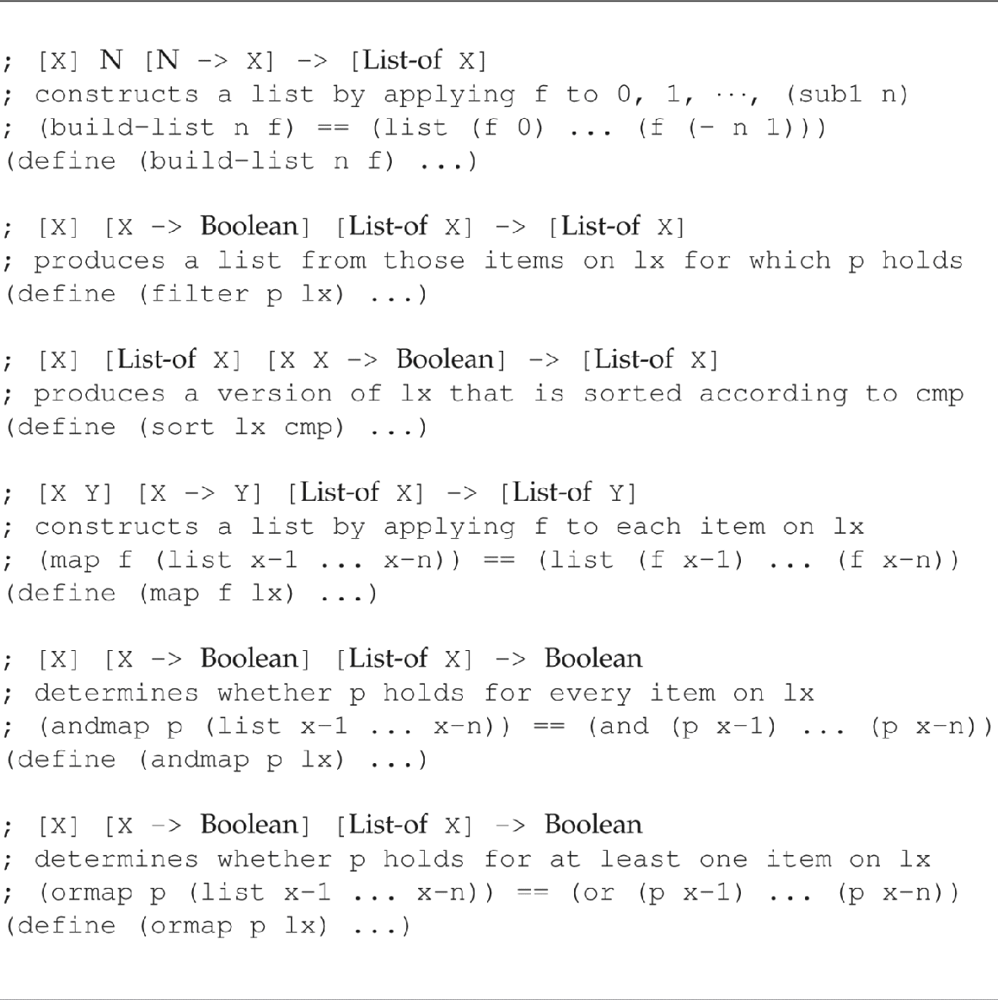
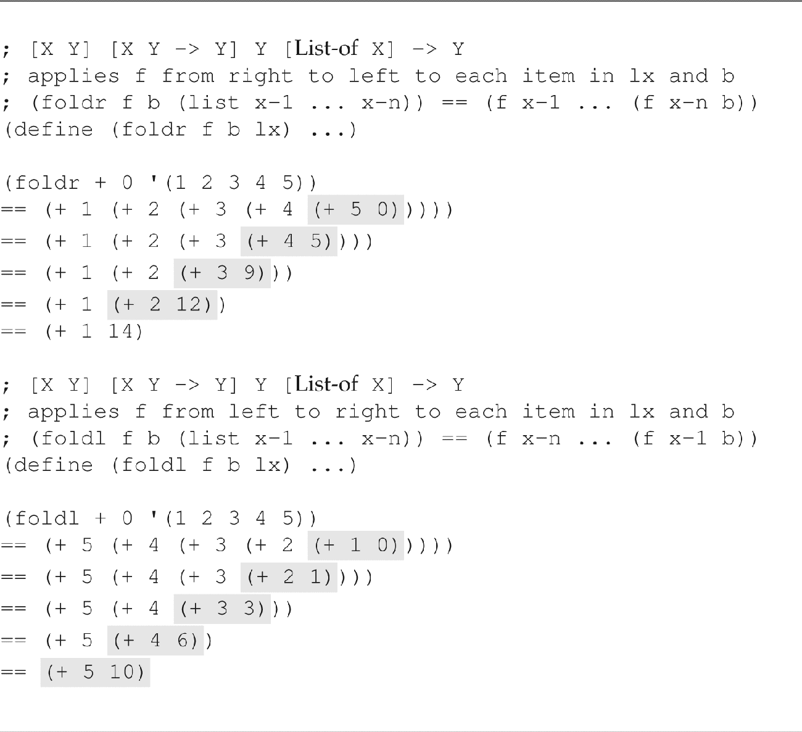
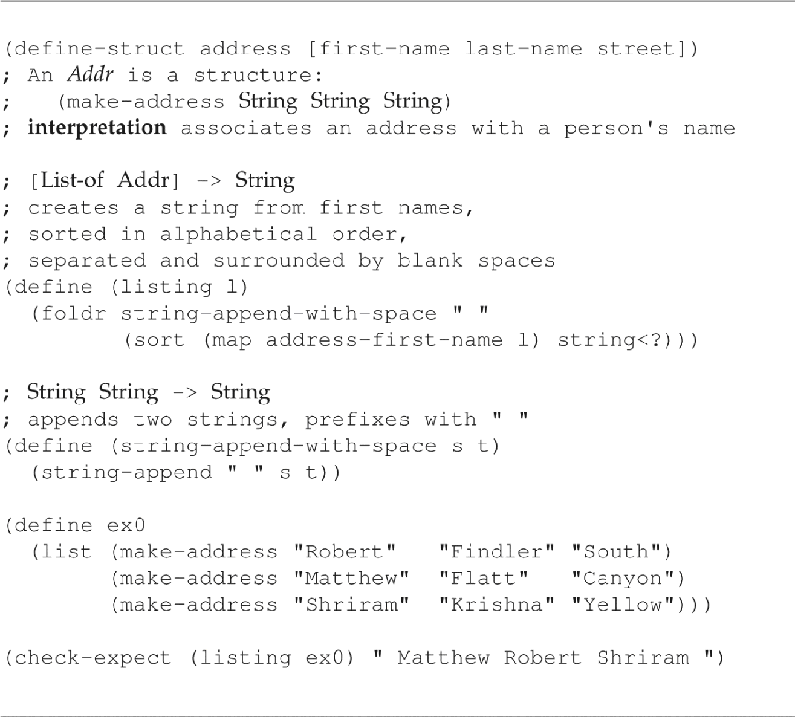
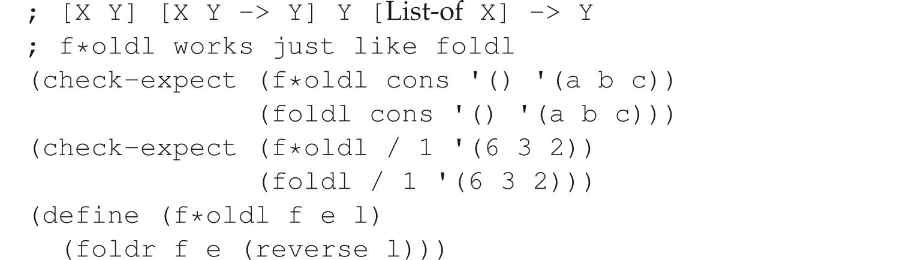

16.1 Existing Abstractions
ISL provides a number of abstract functions for processing natural numbers and lists. Figure 95 collects the header material for the most important ones. The first one processes natural numbers and builds lists:
> (build-list 3 add1)
(list 1 2 3)
The next three process lists and produce lists:
> (filter odd? (list 1 2 3 4 5))
(list 1 3 5)
> (sort (list 3 2 1 4 5) >)
(list 5 4 3 2 1)
> (map add1 (list 1 2 2 3 3 3))
(list 2 3 3 4 4 4)
In contrast, andmap and ormap reduce lists to a Boolean:
> (andmap odd? (list 1 2 3 4 5))
#false
> (ormap odd? (list 1 2 3 4 5))
#true

Figure 95: ISL’s abstract functions for list processing (1)
Hence, this kind of computation is called a reduction.
The two functions in figure 96, foldr and foldl, are extremely powerful. Both reduce lists to values. The sample computations explain the abstract examples in the headers of foldr and foldl via an application of the functions to +, 0, and a short list. As you can see, foldr processes the list values from right to left and foldl from left to right. While for some functions the direction makes no difference, this isn’t true in general.

Figure 96: ISL’s abstract functions for list processing (2)
Mathematics calls functions associative if the order makes no difference. ISL’s = is associative on integers but not on inexacts. See below.
Exercise 256. Explain the following abstract function:
; [X] [X -> Number] [NEList-of X] -> X
; finds the (first) item in lx that maximizes f
; if (argmax f (list x-1 … x-n)) == x-i,
; then (>= (f x-i) (f x-1)), (>= (f x-i) (f x-2)), …
(define (argmax f lx) …)
Use it on concrete examples in ISL. Can you articulate an analogous purpose statement for argmin? 
Figure 97 illustrates the power of composing the functions from figures 95 and 96. Its main function is listing. The purpose is to create a string from a list of addresses. Its purpose statement suggests three tasks and thus the design of three functions:
1. one that extracts the first names from the given list of Addr;
2. one that sorts these names in alphabetical order; and
3. one that concatenates the strings from step 2.

Figure 97: Creating a program with abstractions
Before you read on, you may wish to execute this plan. That is, design all three functions and then compose them in the sense of chapter 11.2 to obtain your own version of listing.
In the new world of abstractions, it is possible to design a single function that achieves the same goal. Take a close look at the innermost expression of listing in figure 97:
(map address-first-name l)
By the purpose statement of map, it applies address-first-name to every single instance of address, producing a list of first names as strings. Here is the immediately surrounding expression:
(sort … string<?)
The dots represent the result of the map expression. Since the latter supplies a list of strings, the sort expression produces a sorted list of first names. And that leaves us with the outermost expression:
(foldr string-append-with-space " " …)
This one reduces the sorted list of first names to a single string, using a function named string-append-with-space. With such a suggestive name, you can easily imagine now that this reduction concatenates all the strings in the desired way—even if you do not quite understand how the combination of foldr and string-append-with-space works.
Exercise 257. You can design build-list and foldl with the design recipes that you know, but they are not going to be like the ones that ISL provides. For example, the design of your own foldl function requires a use of the list reverse function:

Design build-l*st, which works just like build-list. Hint Recall the add-at-end function from exercise 193. Note on Design Part VI covers the concepts needed to design these functions from scratch.